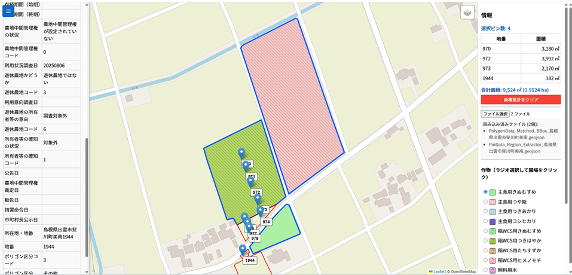
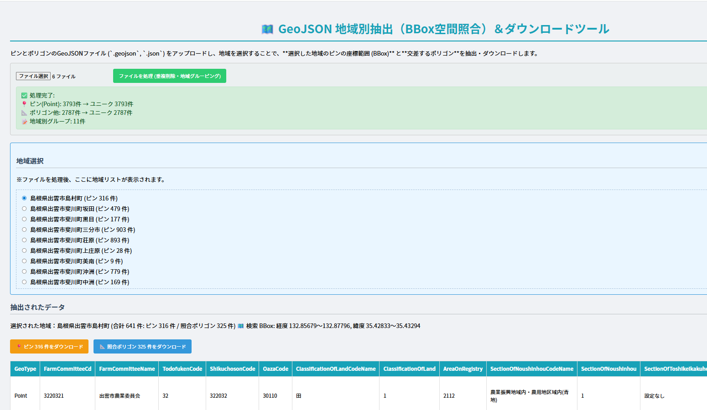
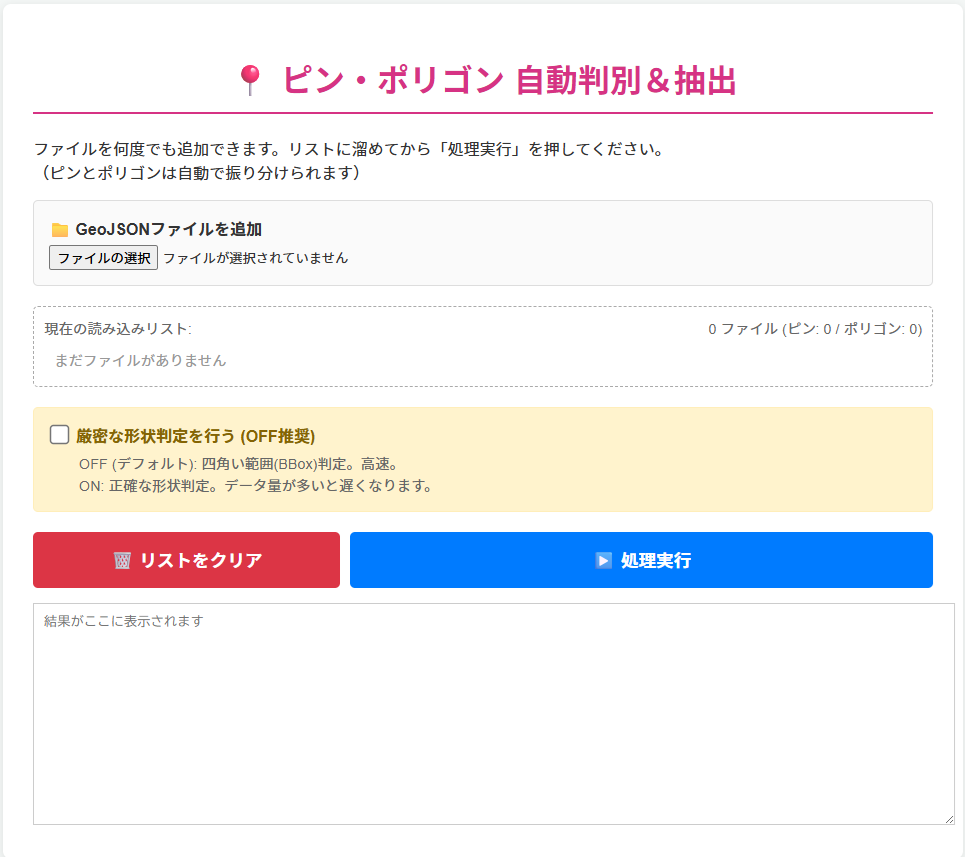
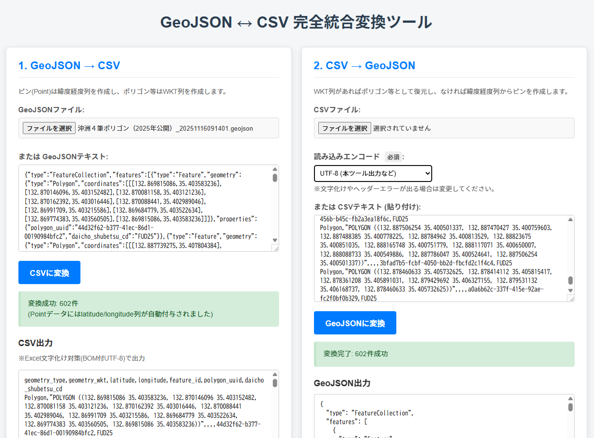
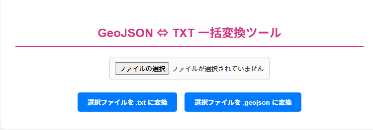

eMAFF農地データツール 一覧
-
🗺️ 農地表示農地のポリゴン（輪郭）とピン（情報）から、面積と作物の情報を含む農地ポリゴンを描画・出力します。
-
📍 地域限定データ抽出複数のピンとポリゴンデータの中から、指定した任意地域のデータのみを切り出して出力します。
-
🚜 農場データ抽出CSVに記載した農地アドレス（住所やID）に対応するピンとポリゴンを自動的に抽出します。

-
🔗 ピンとポリゴンの照合ピン（点）とポリゴン（面）の位置関係を照合し、関連付けられた正しいペアのみを出力します。
-
🔄 農地データとCSVの相互変換GeoJSON（ピンまたはポリゴン）とCSVファイルを相互に変換し、エクセル等での編集を容易にします。
-
🔄 拡張子geojsonとtxtの相互変換メールサーバーによる受信ブロック対策のため拡張子geojsonとtxtを相互に変換します。